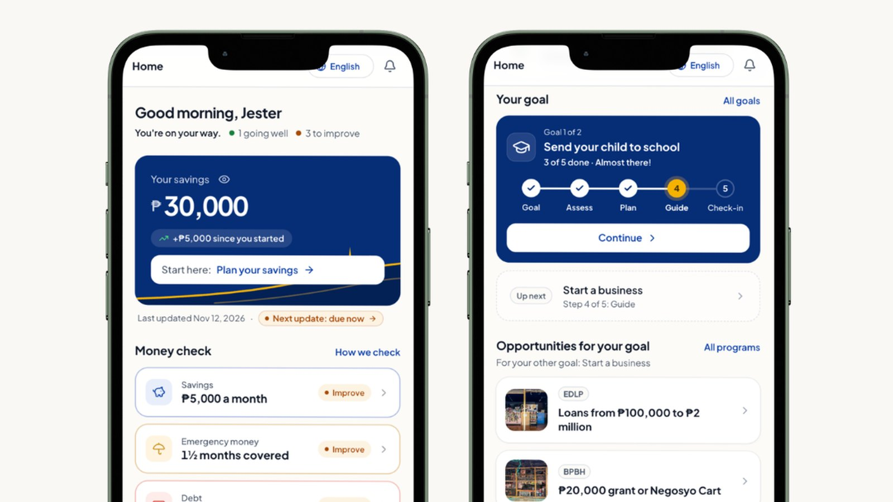

BalikBayan
A decision support platform that helps returning OFWs plan their financial reintegration, built with OWWA.

The problem
Overseas Filipino Workers coming home face big money decisions at once: how to use their savings, whether to start a business, and which government programs they qualify for. Most of that guidance is scattered, generic, or hard to act on.
When we pitched the idea for our capstone, most of our title panelists doubted it. So we cold-emailed OFW organizations across the country. OWWA invited us in and agreed to work with us after our first pitch.
BalikBayan turns an OFW's own finances into a step-by-step plan for each goal, and gives OWWA a portal to manage the programs and rules behind it.
What I did
- Gathered requirements through 5+ interviews with OWWA's Planning and Program Development Division.
- Designed a 5-step goal workflow and 4 user roles (Guest, OFW, Admin, and Super Admin), prototyped in 24 Figma screens.
- Built the Next.js front end and integrated the Gmail API for monthly reminders that keep each OFW's financial plan up to date.
- Designed a database-driven rule-change flow: admins submit changes, super admins approve them, and every version is kept, so OWWA can update program rules without code changes.
- Led a 4-member team through weekly sprint meetings since the project began, keeping development on schedule through OWWA's testing phase.
What it does
Money check
Savings, emergency money, debt, and income in one view, each marked healthy or to improve.
5-step goals
Every goal moves through Goal, Assess, Plan, Guide, and Check-in.
Matching programs
Shows OWWA loans and grants that fit what the user is working toward.
Monthly reminders
Emails sent through the Gmail API prompt each OFW to update their plan.
Rule changes with approval
Admins propose rule changes, super admins approve them, and every version is saved.
4 user roles
Guest, OFW, Admin, and Super Admin, each with its own access.
How it works
OWWA's program rules live in the database instead of the code. When a program changes, an admin submits the new rule, a super admin approves it, and the system keeps the full version history. That lets OWWA keep the platform up to date without a developer.
4 Siblings